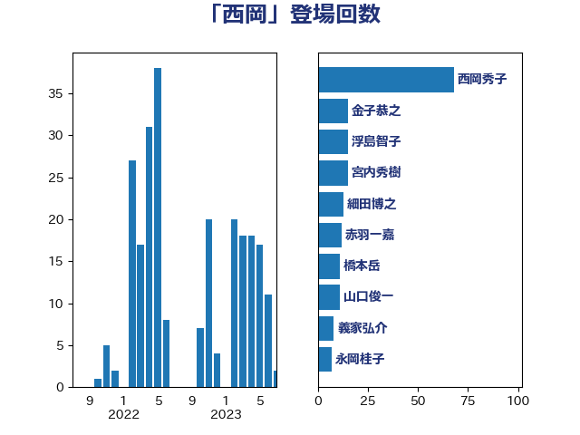

単語「西岡」

| 西岡秀子 | 国民民主党 | 68 回 |
| 金子恭之 | 自由民主党 | 15 回 |
| 浮島智子 | 公明党 | 15 回 |
| 宮内秀樹 | 自由民主党 | 15 回 |
| 細田博之 | 自由民主党 | 13 回 |
| 赤羽一嘉 | 公明党 | 12 回 |
| 橋本岳 | 自由民主党 | 11 回 |
| 山口俊一 | 自由民主党 | 11 回 |
| 義家弘介 | 自由民主党 | 8 回 |
| 永岡桂子 | 自由民主党 | 7 回 |
| 松本剛明 | 自由民主党 | 6 回 |
| 長島昭久 | 自由民主党 | 4 回 |
| 石田真敏 | 自由民主党 | 4 回 |
| 海江田万里 | 立憲民主党 | 4 回 |
| 末松信介 | 自由民主党 | 4 回 |
| 岡田直樹 | 自由民主党 | 4 回 |
| 鈴木敦 | 国民民主党 | 3 回 |
| 高木啓 | 自由民主党 | 2 回 |
| 芳賀道也 | 国民民主党 | 2 回 |
| 笠浩史 | 無所属 | 2 回 |
| 牧原秀樹 | 自由民主党 | 2 回 |
| 浜地雅一 | 公明党 | 2 回 |
| 松原仁 | 立憲民主党 | 2 回 |
| 中西祐介 | 自由民主党 | 2 回 |
| 高橋千鶴子 | 日本共産党 | 1 回 |
| 鈴木俊一 | 自由民主党 | 1 回 |
| 西村康稔 | 自由民主党 | 1 回 |
| 篠原孝 | 立憲民主党 | 1 回 |
| 笠井亮 | 日本共産党 | 1 回 |
| 田畑裕明 | 自由民主党 | 1 回 |
| 斉藤鉄夫 | 公明党 | 1 回 |
| 岸田文雄 | 自由民主党 | 1 回 |
| 小倉將信 | 自由民主党 | 1 回 |